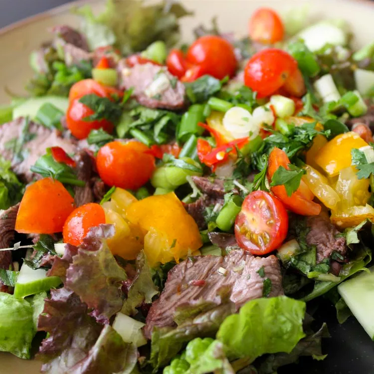

Thai Beef Salad

Description:
Tasty Thai beef salad that has lots
of Thai flavors and is so colorful!
Ingredients:
- 1 cup lime juice
- 1 cup chopped fresh cilantro,
plus more for garnish
- 1 cup chopped fresh mint leaves
- 1/2 cup white sugar
- 1/3 cup fish sauce
- 2 green onions, chopped
- 1 stalk lemongrass, smached and
cut into 1-inch pieces
- 1 tablespoon sweet chili sauce
- 1 1/2 pounds steak fillet
- l head lettuce - rinsed, dried, and
torn into bite-size pieces
- 1/2 english cucumber, diced
- 1 pint cherry tomatoes, halved
Steps
- Mix lime juice, cilantro, mint leaves, sugar,
fish sauce, green onions, lemongrass, and chili
sauce together in a large bowl until sugar is
dissolved. Adjust the flavor, if desired, by
adding more sugar and/or fish sauce; set aside.
- Preheat an outdoor grill for high heat and lightly
oil the grate.
- Cook steak on the preheated grill until it begins
to firm and is hot and slightly pink in the center,
about 4 to 6 minutes per side. An instant-read
thermometer inserted into the center should read
140 degrees F (60 degrees C).
- Transfer steak to a chopping board and slice into
thin strips; add steak and its juices into the bowl
with herb mixture. Cover and refrigerate for at
least 3 hours.
- Place lettuce in a salad bowl; arrange cucumber on
top. Add steak and pour all of the herb mixture on
top. Scatter cherry tomatoes over salad and garnish
with fresh cilantro leaves.